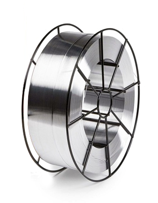
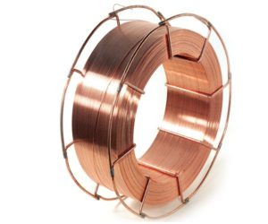
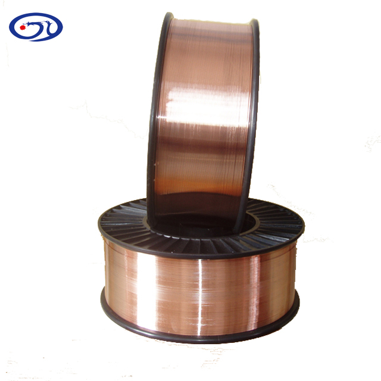

Gaz altı Telleri
Kobatek MIG AlSi5
% 5'e kadar "Si" içeren döküm ve hadde alüminyumların ve % 2'den daha az alaşım elementi içeren alüminyum alaşımlarının kaynağında kullanılır.
Geniş ağızlı kaynak uygulamalarında iş parçasına kaynaktan önce 150-200°C öntav uygulanması ve kaynak yapılacak bölgenin iyice temizlenmesi önerilir. Kaynak banyosu yüksek akışkanlığa sahiptir.

Kobatek MIG AlMg5
% 3'den fazla Mg içeren alüminyum alaşımlarının kaynağında kullanılır. Dolgu metali deniz suyunun oluşturduğu korozyona karşı dayanıklıdır.
Geniş ağızlı kaynak uygulamalarında iş parçasına kaynaktan önce 150°C öntav uygulanması ve kaynak yapılacak bölgenin iyice temizlenmesi önerilir.

Kobatek MIG AlMg4.5Mn
Düşük sıcaklıklarda çalışan (-196°C) ve yüksek mekanik dayanıma sahip alüminyum alaşımlarının kaynağında kullanılır. Mekanik özelliklerinin diğer konvansiyonel tip ürünlere oranla daha yüksek oluşu en önemli özelliğidir.
